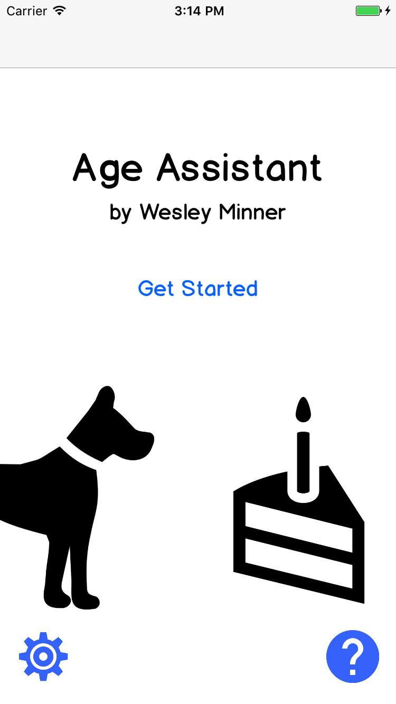
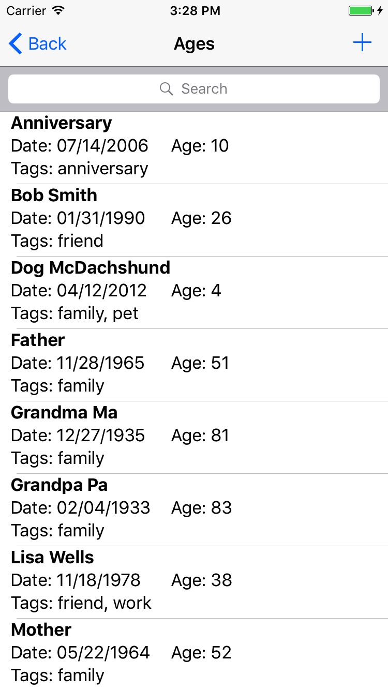
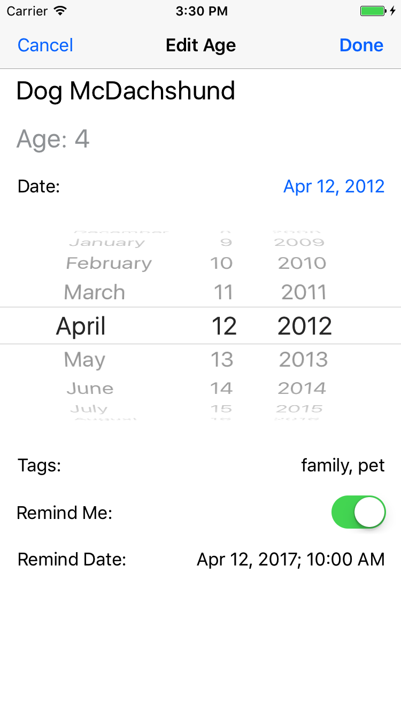
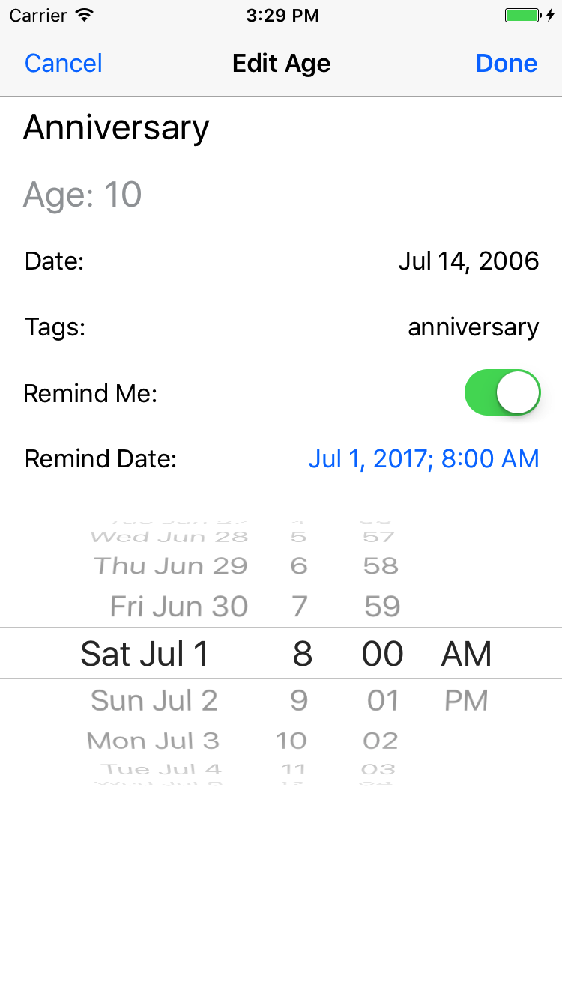
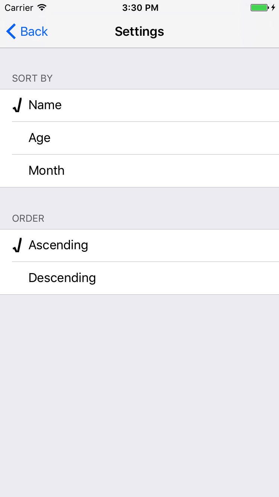

Age Assistant
A utility to help you keep track of dates and ages
Do you ever have trouble coming up with a loved one's age? Instead of doing arithmetic in your head using a birthday or an anniversary date, why not let your phone handle it? Age Assistant is a simple app I made so I don't have to look embarrassed when the doctor asks me how old my parents are.
Features
Search and sort age profiles based on name, age, or month. Use the simple tagging system to keep track of important groups. Set up reminders for each age profile, so you remember to celebrate or make preparations. Use Age Assistant for any kind of date, including pet birthdays, anniversaries, and future dates!
This was just a fun, personal project for me, so there are no ads or other costs. Enjoy!
Screenshots
    About me
I thought up this idea for an app because I could not easily calculate my parents' ages during a doctor visit. I am currently a grad student at UCLA studying Computer Science.
This is also the first app I've developed on my own. Any comments or feedback is appreciated. You can reach me at waminnerco@gmail.com